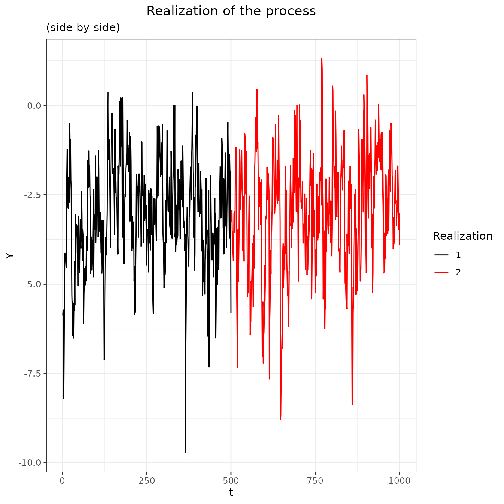
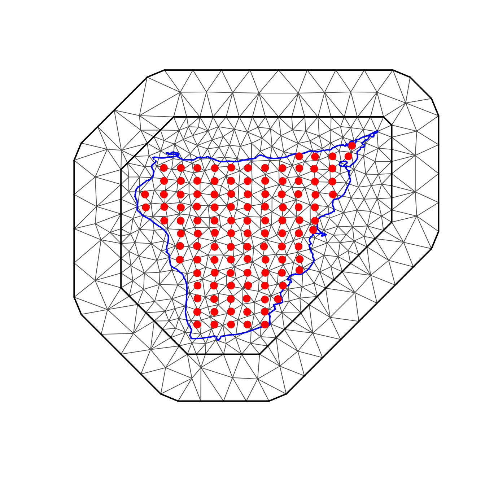

Ngme2 replicates feature
replicate.RmdIn this vignette we will introduce the feature of replicates, which
allows to include multiple realizations of the stochastic processes that
can be included in the different models offered in
ngme2.
Description
Consider a stochastic process \(\mathbf{W}\) indexed by an index set \(\mathbf{I}\), the idea is to allow the inclusion of replicates of the process in the model.
For example, if one wants to include k realizations of an autoregressive process of order 1 with \(n\) observations in the model one can do so in the following way
\[\begin{align} X^{(j)}_1 &= \epsilon^{(j)}_1\\ X^{(j)}_i &= \alpha X^{(j)}_{i-1} + \epsilon^{(j)}_i, i = 2, \ \cdots,\ n \end{align}\]
where \(X^{(j)}_i\) denotes the \(i \text{-}th\) observation of \(j \text{-}th\) realization of the process for \(i = 1, \ \cdots,\ n\) and \(j = 1, \ \cdots,\ k\), with \(|\alpha| < 1\) and \(\epsilon^{(j)}_1, \ \cdots \ , \epsilon^{(j)}_{n}\) is either i.i.d. NIG or Gaussian noise.
Usage
AR(1) model
The following example will show how to use the replicates feature for an AR(1) model.
Suppose one has a response variable with \(2n\) observations
library(ngme2)
#> This is ngme2 of version 0.5.0
#> - See our homepage: https://davidbolin.github.io/ngme2 for more details.
library(ggplot2)
# creating ar1 process
n <- 500
myar <- f(1:n, model="ar1", rho = .75, noise = noise_nig())
#> The legacy packages maptools, rgdal, and rgeos, underpinning the sp package,
#> which was just loaded, will retire in October 2023.
#> Please refer to R-spatial evolution reports for details, especially
#> https://r-spatial.org/r/2023/05/15/evolution4.html.
#> It may be desirable to make the sf package available;
#> package maintainers should consider adding sf to Suggests:.
#> The sp package is now running under evolution status 2
#> (status 2 uses the sf package in place of rgdal)
W1 <- simulate(myar, seed = 314) # simulating one realization of the process
W2 <- simulate(myar, seed = 159) # simulating another realization of the process
# Creating the response variable from the process and adding measurement noise
Y <- -3 + c(W1, W2) + rnorm(2 * n, sd = .2)
df <- data.frame(Y, idx = 1:(2 * n), group = rep(1:2, each = n)) # creating the data frame to fit the model later
Note that if both processes are considered as a single one instead of two realizations of the same process, then the first observation of the second realization is assumed to be dependent on the last one of the first process, which might no be desirable in some cases.

This can be seen in the \(\mathbf{K}\) matrix of the model (all the models in the have the same form \(K \mathbf{W} = \mathbf{\ epsilon}\)), for instance, consider the following little example to illustrate the last statement.
no.replicates <- f(1:6, model="ar1", rho = .5, noise = noise_normal())
replicates <- f(rep(1:3, 2),
model = "ar1",
rho = .5,
noise = noise_normal(), replicate = rep(1:2, each = 3)
)
# K matrix from the model without replicates
replicates$operator$K
#> 3 x 3 sparse Matrix of class "dgCMatrix"
#>
#> [1,] 1.0 . .
#> [2,] -0.5 1.0 .
#> [3,] . -0.5 1
# K matrix from the model with replicates
no.replicates$operator$K
#> 6 x 6 sparse Matrix of class "dgCMatrix"
#>
#> [1,] 1.0 . . . . .
#> [2,] -0.5 1.0 . . . .
#> [3,] . -0.5 1.0 . . .
#> [4,] . . -0.5 1.0 . .
#> [5,] . . . -0.5 1.0 .
#> [6,] . . . . -0.5 1It is clear how the link between the last observation of the first process dissapears by looking at the \(\mathbf{K}_{4, 3}\) entry of the matrix \(\mathbf{K}\).
With that being said, one can fit the model using the
ngme function as shown below.
# fitting the model
mod.replicates <- ngme(
formula = Y ~ f(
c(1:n, 1:n),
model = "ar1",
noise = noise_nig()
),
replicate = df$group,
data = df,
control_opt = control_opt(
print_check_info = FALSE
)
)
#> Starting estimation...
#>
#> Posterior sampling done!
mod.replicates
#> *** Ngme object ***
#>
#> Fixed effects:
#> (Intercept)
#> -3
#>
#> Models:
#> $field1
#> Model type: AR(1)
#> rho = 0.741
#> Noise type: NIG
#> Noise parameters:
#> mu = -0.0696
#> sigma = 1.01
#> nu = 0.867
#>
#> Measurement noise:
#> Noise type: NORMAL
#> Noise parameters:
#> sigma = 0.244
#>
#>
#> Number of replicates is 2SPDE Matern model
The following data is taken from the swamp of Cienaga Grande in Santa Marta, Colombia. There is a total of 114 locations where some properties of the swamp were measured. Those measurements were taken twice, however there is no information available about their chronological order so this data cannot be treated as spatiotemporal, despite that, the multiple measurements can be treated as replicates.
In this particular case the temperature is the feature that will be modeled.
# library(ngme2)
library(ggplot2)
# reading the data and the boundary of Cienaga Grande
data(cienaga)
data(cienaga.border)
cienaga.border
#> East North
#> 1 954207.8 1704451
#> 2 954079.3 1704702
#> 3 954244.5 1704745
#> 4 954489.3 1704733
#> 5 954966.6 1704635
#> 6 955321.5 1704635
#> 7 955535.7 1704665
#> 8 955713.2 1704751
#> 9 956184.4 1704763
#> 10 956545.4 1704830
#> 11 956826.9 1704941
#> 12 956857.5 1704990
#> 13 956863.6 1705130
#> 14 956814.7 1705167
#> 15 956704.5 1705198
#> 16 956472.0 1705179
#> 17 956325.1 1705198
#> 18 956190.5 1705173
#> 19 956086.5 1705118
#> 20 955921.2 1705173
#> 21 955707.0 1705338
#> 22 955633.6 1705424
#> 23 955798.8 1705387
#> 24 956049.7 1705259
#> 25 956110.9 1705271
#> 26 956215.0 1705442
#> 27 956423.0 1705510
#> 28 956533.2 1705479
#> 29 956612.7 1705430
#> 30 956857.5 1705400
#> 31 957010.5 1705234
#> 32 957053.3 1705155
#> 33 957047.2 1705075
#> 34 956918.7 1704855
#> 35 956943.2 1704782
#> 36 957053.3 1704690
#> 37 957536.8 1704390
#> 38 957585.7 1704372
#> 39 957598.0 1704365
#> 40 958136.5 1704365
#> 41 958142.6 1704378
#> 42 958742.3 1704335
#> 43 958834.1 1704378
#> 44 959097.3 1704598
#> 45 959262.5 1704690
#> 46 959446.1 1704733
#> 47 959592.9 1704726
#> 48 959727.6 1704671
#> 49 959843.8 1704659
#> 50 960223.3 1704745
#> 51 960308.9 1704812
#> 52 960400.7 1704824
#> 53 960816.9 1704537
#> 54 961037.2 1704482
#> 55 961190.1 1704378
#> 56 961667.5 1704157
#> 57 961881.6 1704084
#> 58 962291.7 1704078
#> 59 962609.9 1704157
#> 60 962836.3 1704163
#> 61 963429.9 1704090
#> 62 963717.5 1704096
#> 63 964286.6 1704231
#> 64 964360.1 1704316
#> 65 964372.3 1704316
#> 66 964629.3 1704323
#> 67 964904.7 1704433
#> 68 965382.0 1704524
#> 69 965761.4 1704555
#> 70 965908.3 1704629
#> 71 966208.2 1704990
#> 72 966391.7 1705051
#> 73 966550.8 1705039
#> 74 967266.8 1704677
#> 75 967921.6 1704555
#> 76 968160.3 1704561
#> 77 969047.6 1704677
#> 78 969427.0 1704788
#> 79 969610.6 1704873
#> 80 969677.9 1704959
#> 81 970173.6 1705143
#> 82 970289.9 1705216
#> 83 970626.4 1705289
#> 84 971177.2 1705289
#> 85 971538.3 1705375
#> 86 971770.8 1705504
#> 87 971868.7 1705589
#> 88 972278.7 1705681
#> 89 972707.1 1705559
#> 90 973037.5 1705540
#> 91 973349.6 1705638
#> 92 973386.4 1705669
#> 93 973582.2 1705748
#> 94 973882.0 1705742
#> 95 973961.6 1705803
#> 96 974077.9 1705852
#> 97 974341.0 1705816
#> 98 974481.8 1705840
#> 99 974561.3 1705883
#> 100 974653.1 1706054
#> 101 974732.7 1706140
#> 102 974879.5 1706171
#> 103 975026.4 1706318
#> 104 975460.9 1706507
#> 105 975681.2 1706513
#> 106 975748.5 1706556
#> 107 975828.0 1706526
#> 108 975919.8 1706593
#> 109 976017.8 1706483
#> 110 976121.8 1706428
#> 111 976152.4 1706385
#> 112 976244.2 1706422
#> 113 976280.9 1706550
#> 114 976274.8 1706691
#> 115 976293.1 1706740
#> 116 976342.1 1706770
#> 117 976397.2 1706654
#> 118 976397.2 1706495
#> 119 976427.8 1706464
#> 120 976482.8 1706477
#> 121 976678.7 1706862
#> 122 976727.6 1707003
#> 123 976801.1 1707107
#> 124 976813.3 1707113
#> 125 977082.5 1707131
#> 126 977107.0 1706887
#> 127 977168.2 1706813
#> 128 977309.0 1706838
#> 129 977376.3 1706923
#> 130 977382.4 1706985
#> 131 977443.6 1707082
#> 132 977449.7 1707144
#> 133 977419.1 1707205
#> 134 977370.2 1707229
#> 135 977345.7 1707303
#> 136 977517.0 1707346
#> 137 977553.8 1707388
#> 138 977627.2 1707346
#> 139 977725.1 1707382
#> 140 977872.0 1707517
#> 141 978122.9 1707682
#> 142 978361.5 1707768
#> 143 978600.2 1707896
#> 144 978698.1 1707896
#> 145 978875.6 1707994
#> 146 978955.1 1708086
#> 147 979420.2 1708386
#> 148 979524.2 1708429
#> 149 979561.0 1708472
#> 150 979671.1 1708502
#> 151 979873.1 1708649
#> 152 979915.9 1708649
#> 153 979909.8 1708551
#> 154 979811.9 1708410
#> 155 979701.7 1708325
#> 156 979505.9 1708221
#> 157 979438.6 1708159
#> 158 979420.2 1708080
#> 159 979469.2 1707909
#> 160 979432.4 1707786
#> 161 979328.4 1707756
#> 162 979261.1 1707774
#> 163 979242.7 1707774
#> 164 979028.6 1707945
#> 165 978973.5 1707945
#> 166 978912.3 1707792
#> 167 978893.9 1707676
#> 168 978765.4 1707382
#> 169 978704.2 1707321
#> 170 978575.7 1707284
#> 171 978453.3 1707284
#> 172 978324.8 1707070
#> 173 978098.4 1706862
#> 174 978110.6 1706740
#> 175 978257.5 1706605
#> 176 978355.4 1706562
#> 177 978398.2 1706470
#> 178 978324.8 1706330
#> 179 978312.6 1706250
#> 180 978306.5 1706238
#> 181 978043.3 1706220
#> 182 977927.0 1706171
#> 183 977902.6 1705926
#> 184 977547.6 1705571
#> 185 977529.3 1705351
#> 186 977578.2 1705094
#> 187 977590.5 1704684
#> 188 977529.3 1704488
#> 189 977321.2 1704084
#> 190 977143.7 1703851
#> 191 976941.8 1703686
#> 192 976813.3 1703515
#> 193 976770.5 1703374
#> 194 976476.7 1703362
#> 195 976366.6 1703380
#> 196 976268.7 1703349
#> 197 975923.0 1703396
#> 198 976378.8 1703882
#> 199 976391.0 1704004
#> 200 976225.8 1704151
#> 201 975877.0 1704108
#> 202 975809.7 1704066
#> 203 975650.6 1704041
#> 204 975534.3 1703913
#> 205 975509.8 1703717
#> 206 975522.1 1703600
#> 207 975589.4 1703484
#> 208 975668.9 1703435
#> 209 975742.4 1703429
#> 210 975803.6 1703386
#> 211 975922.3 1703394
#> 212 976268.4 1703349
#> 213 976280.9 1703037
#> 214 976464.5 1702774
#> 215 976660.3 1702683
#> 216 976605.2 1702578
#> 217 976586.9 1702346
#> 218 976617.5 1702040
#> 219 976697.0 1701654
#> 220 976739.9 1701544
#> 221 976770.5 1701244
#> 222 976635.8 1700810
#> 223 976372.7 1700235
#> 224 976158.5 1699543
#> 225 976066.7 1699317
#> 226 975834.2 1699011
#> 227 975717.9 1698913
#> 228 975638.3 1698809
#> 229 975503.7 1698693
#> 230 975369.1 1698613
#> 231 975001.9 1698491
#> 232 974775.5 1698356
#> 233 974751.0 1698221
#> 234 974738.8 1698221
#> 235 974775.5 1698093
#> 236 974744.9 1698044
#> 237 974714.3 1697683
#> 238 974867.3 1697169
#> 239 974855.0 1696991
#> 240 974922.4 1696771
#> 241 974922.4 1696673
#> 242 974842.8 1696691
#> 243 974763.2 1696679
#> 244 974579.7 1696496
#> 245 974292.0 1696373
#> 246 974273.7 1696337
#> 247 974157.4 1696269
#> 248 974096.2 1696288
#> 249 973973.8 1696275
#> 250 973906.5 1696245
#> 251 973753.5 1696080
#> 252 973606.7 1695994
#> 253 973374.1 1695908
#> 254 973141.6 1695682
#> 255 973019.2 1695419
#> 256 972958.0 1695198
#> 257 972933.5 1694960
#> 258 972970.2 1694678
#> 259 972951.9 1694268
#> 260 973049.8 1694005
#> 261 973239.5 1693772
#> 262 973472.0 1693546
#> 263 973637.3 1693460
#> 264 974004.4 1693258
#> 265 973588.3 1693063
#> 266 973447.6 1693069
#> 267 973447.6 1693105
#> 268 973594.4 1693203
#> 269 973612.8 1693265
#> 270 973521.0 1693369
#> 271 973368.0 1693467
#> 272 973264.0 1693473
#> 273 973190.5 1693350
#> 274 973025.3 1693436
#> 275 972878.4 1693460
#> 276 972780.5 1693430
#> 277 972688.7 1693473
#> 278 972450.1 1693307
#> 279 972443.9 1693277
#> 280 972523.5 1693209
#> 281 972425.6 1693130
#> 282 972370.5 1693044
#> 283 972211.4 1692940
#> 284 972064.5 1692530
#> 285 972070.7 1692322
#> 286 972199.2 1692004
#> 287 972278.7 1691924
#> 288 972058.4 1691673
#> 289 972033.9 1691582
#> 290 972131.9 1691202
#> 291 972168.6 1690927
#> 292 972254.2 1690847
#> 293 972266.5 1690670
#> 294 972468.4 1690382
#> 295 972425.6 1690015
#> 296 972468.4 1689868
#> 297 972609.2 1689581
#> 298 972596.9 1689391
#> 299 972333.8 1688816
#> 300 972095.1 1688387
#> 301 971862.6 1688032
#> 302 971526.0 1687714
#> 303 971385.3 1687610
#> 304 971232.3 1687445
#> 305 971042.6 1687359
#> 306 970773.3 1687353
#> 307 970345.0 1687402
#> 308 970118.5 1687323
#> 309 969849.3 1687188
#> 310 969555.5 1686680
#> 311 969555.5 1686607
#> 312 969610.6 1686539
#> 313 969769.7 1686576
#> 314 969788.1 1686564
#> 315 969873.7 1686619
#> 316 969916.6 1686582
#> 317 969934.9 1686368
#> 318 970008.4 1686264
#> 319 970008.4 1686215
#> 320 969800.3 1686080
#> 321 969702.4 1685774
#> 322 969402.5 1685615
#> 323 969267.9 1685474
#> 324 968943.6 1684918
#> 325 968827.3 1684765
#> 326 968753.9 1684618
#> 327 968741.6 1684397
#> 328 968968.1 1683449
#> 329 968974.2 1683271
#> 330 968876.3 1683149
#> 331 968264.3 1682941
#> 332 968141.9 1682935
#> 333 967964.5 1682843
#> 334 967946.1 1682739
#> 335 968105.2 1682537
#> 336 968068.5 1682347
#> 337 968129.7 1682304
#> 338 968117.4 1682188
#> 339 967548.3 1681650
#> 340 967383.1 1681546
#> 341 967340.3 1681405
#> 342 967438.2 1681387
#> 343 967438.2 1681399
#> 344 967542.2 1681172
#> 345 967487.1 1680732
#> 346 967474.9 1680365
#> 347 967444.3 1680150
#> 348 967517.7 1680046
#> 349 967456.5 1679875
#> 350 967077.1 1679722
#> 351 966777.3 1679643
#> 352 966397.9 1679508
#> 353 964788.4 1678761
#> 354 963729.7 1678468
#> 355 962793.5 1678364
#> 356 962236.6 1678229
#> 357 961997.9 1678198
#> 358 961918.4 1678155
#> 359 961759.3 1677776
#> 360 961661.3 1677623
#> 361 961563.4 1677586
#> 362 961600.2 1677715
#> 363 961441.0 1677764
#> 364 961398.2 1677825
#> 365 961379.8 1678058
#> 366 961245.2 1678192
#> 367 961147.3 1678223
#> 368 960920.9 1678180
#> 369 960737.3 1678064
#> 370 960192.7 1678009
#> 371 959739.8 1677886
#> 372 959103.4 1677843
#> 373 958546.5 1677837
#> 374 958467.0 1677898
#> 375 958454.7 1678076
#> 376 958326.2 1678284
#> 377 958399.6 1678529
#> 378 958540.4 1679177
#> 379 958515.9 1679184
#> 380 958497.6 1679239
#> 381 958375.2 1679465
#> 382 958387.4 1679624
#> 383 958142.6 1679955
#> 384 958093.7 1680089
#> 385 958063.1 1680322
#> 386 958026.3 1680432
#> 387 957971.3 1680493
#> 388 957977.4 1680701
#> 389 957952.9 1680811
#> 390 957824.4 1681784
#> 391 957848.9 1682262
#> 392 957897.8 1682433
#> 393 957916.2 1682763
#> 394 957897.8 1683027
#> 395 957952.9 1683663
#> 396 957952.9 1684195
#> 397 957989.6 1684367
#> 398 958001.9 1685340
#> 399 957940.7 1686001
#> 400 957793.8 1686625
#> 401 957659.2 1686802
#> 402 957555.1 1687255
#> 403 957475.6 1687396
#> 404 957224.7 1687653
#> 405 957047.2 1687892
#> 406 956741.2 1688191
#> 407 956557.7 1688283
#> 408 956539.3 1688326
#> 409 956208.8 1688565
#> 410 956147.7 1688675
#> 411 956068.1 1688999
#> 412 956006.9 1689776
#> 413 955921.2 1690382
#> 414 955700.9 1690609
#> 415 955603.0 1690713
#> 416 955645.9 1690731
#> 417 955780.5 1690909
#> 418 955645.9 1691074
#> 419 955694.8 1691557
#> 420 955774.4 1691894
#> 421 955841.7 1692334
#> 422 955872.3 1692757
#> 423 955841.7 1693142
#> 424 955468.4 1693803
#> 425 955242.0 1694097
#> 426 954923.7 1694409
#> 427 954783.0 1694495
#> 428 954752.4 1694513
#> 429 954366.9 1694892
#> 430 954177.2 1695045
#> 431 954018.1 1695217
#> 432 953926.3 1695376
#> 433 953161.3 1695933
#> 434 953057.3 1695988
#> 435 953057.3 1696012
#> 436 952947.1 1696080
#> 437 952781.9 1696294
#> 438 952635.0 1696434
#> 439 952616.7 1696508
#> 440 952292.4 1696869
#> 441 952280.1 1697028
#> 442 952304.6 1697897
#> 443 952243.4 1698350
#> 444 952188.3 1698509
#> 445 952127.1 1698521
#> 446 952127.1 1698631
#> 447 952029.2 1698919
#> 448 952023.1 1698937
#> 449 952035.3 1698956
#> 450 952053.7 1698999
#> 451 952047.6 1699213
#> 452 952102.6 1699458
#> 453 952121.0 1699745
#> 454 952157.7 1699837
#> 455 952163.8 1699935
#> 456 952365.8 1700333
#> 457 952414.7 1700345
#> 458 952592.2 1700467
#> 459 953191.9 1701055
#> 460 953326.6 1701238
#> 461 953565.2 1701324
#> 462 953742.7 1701428
#> 463 953907.9 1701575
#> 464 954109.9 1701930
#> 465 954103.7 1702009
#> 466 954158.8 1702328
#> 467 954134.3 1702774
#> 468 953950.7 1703239
#> 469 953944.6 1703472
#> 470 954048.7 1703643
#> 471 954434.2 1704035
#> 472 954421.9 1704212
# scale the coords
cienaga.border[, 1] <- (cienaga.border[, 1] - mean(cienaga$East)) / sd(cienaga$East)
cienaga.border[, 2] <- (cienaga.border[, 2] - mean(cienaga$North)) / sd(cienaga$North)
cienaga <- within(cienaga, {
East_scale <- (East - mean(East)) / sd(East)
North_scale <- (North - mean(North)) / sd(North)
})
# creating label for the measurement group
cienaga$measurement <- rep(1:2, each = (n <- nrow(cienaga) / 2))
Now we briefly show how to fit the model and how to predict for locations where the feature is unknown.
# creating the mesh
mesh <- INLA::inla.mesh.2d(
loc.domain = cienaga.border,
max.edge = c(0.4, 1),
max.n = 500
)
mesh$n
#> [1] 460
# fitting the model
fit <- ngme(
formula = temp ~ 1 +
f(as.matrix(cienaga[, 1:2]), model = "matern", mesh=mesh,
name = "spde", noise = noise_nig()),
data = cienaga,
replicate=cienaga$measurement,
control_opt = control_opt(
estimation = T,
iterations = 500,
n_slope_check = 10,
n_parallel_chain = 4,
print_check_info = F
),
debug = F,
)
#> Starting estimation...
#>
#> Posterior sampling done!
fit
#> *** Ngme object ***
#>
#> Fixed effects:
#> (Intercept)
#> 5.87e-16
#>
#> Models:
#> $spde
#> Model type: Matern
#> kappa = 1.03
#> Noise type: NIG
#> Noise parameters:
#> mu = 0.319
#> sigma = 0.972
#> nu = 0.98
#>
#> Measurement noise:
#> Noise type: NORMAL
#> Noise parameters:
#> sigma = 0.998
#>
#>
#> Number of replicates is 2With the fitted model, one can do predictions as follows.
nxy <- c(300, 200)
projgrid <- rSPDE::rspde.mesh.projector(
mesh = mesh,
xlim = range(cienaga.border[, 1]), ylim = range(cienaga.border[, 2]),
dims = nxy
)
xy.in <- splancs::inout(projgrid$lattice$loc, as.matrix(cienaga.border[, 1:2]))
coord.prd <- projgrid$lattice$loc[xy.in, ]
lp <- predict(fit, map = list(spde=coord.prd)) # making the predictions
# getting the mean of the predictions for each replicate
preds_mean <- lp[["mean"]]